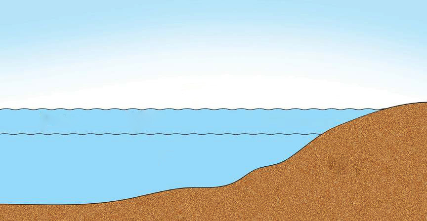

(v) Tides
Ocean tide is the rising and falling of water level in oceans as shown in Figure 3.4. This is caused by gravitational attraction exerted largely by the moon and partly by the Sun upon the rotating earth. The main reason why the gravitational attraction of the moon is greater compared to that of the Sun is that the moon is closer to the Earth compared to the long distance from the Sun. When the Earth, moon, and the sun are in a straight line, ocean water level rises and when the earth, moon, and the sun are not in a straight line, the ocean water level falls. Tides are experienced at different times of the day and at night and in different places on the earth’s surface, because the earth is rotating.

High tideTidal rangeLow tideSeaLandExercise 3.3
1.Explain the factors that affect the deflection of winds and ocean currents.
2.What is the importance of knowledge of deflection of winds and ocean currents in your daily life?
3.Do tides happen in lakes and rivers, or just in the ocean? Why?
4.What is the importance of the low and high tides to your life?
Revolution of the Earth
Activity 3.4
 Activity 3.4
Activity 3.4(a) Search for videos, simulation, or animations from reliable online sources on how the Earth revolves around the Sun and how the Moon revolves around the Earth;
(b) Observe what happens during the movements, and record your observation; and
(c) Draw an illustration of what you have observed.
25